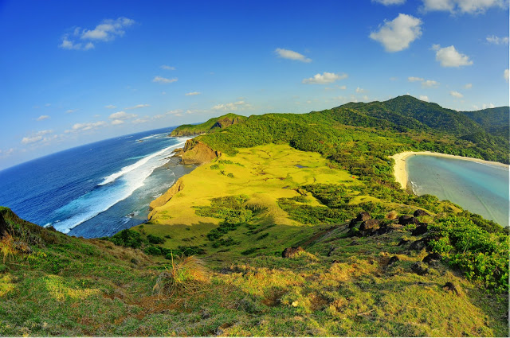

Park Profile • Batanes
Batanes Protected Landscapes and Seascapes
Rolling hills, dramatic cliffs, stone houses, and open coastal views make Batanes a memorable destination. Visit responsibly and respect private land and local traditions.
Terrains That Tell a Story
Rolling hills, rolling seas, steep cliffs and rolling green pastures. The protected area includes both land and marine zones, preserving everything from limestone bluffs to rugged coastlines. The land and sea are deeply interconnected here—what happens in one affects the other.
Seascapes Rich in Marine Life
Surrounding waters are teeming with marine species: coral gardens, fish nurseries, and migratory routes. The seascape is vital not only for ecological balance but also for local fishing communities who depend on healthy reefs and coastal ecosystems.
Endemic Flora & Fauna
The island hosts plants and birds that exist nowhere else—the Batanes flower species, seabirds that nest on ridges, and grassland plants adapted to wind and salt spray. The protected status helps prevent habitat loss from development or invasive species.
Helpful reminders
- Check official park announcements and local weather before visiting.
- Follow posted rules and instructions from park staff or guides.
- Respect nature and local communities; take all trash with you.